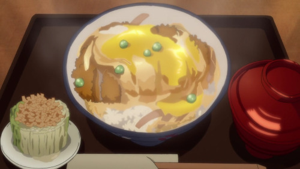

Go back to main site
Katsudon
Ingredients:
- 3 cups cooked rice ( following this recipe if you can. Feel free to make it ahead of time and heat it up before plating, but I’ll let you know when to start cooking the rice if you want to make everything all at once)
- 2 boneless pork chops (and a meat mallet)
- Salt and pepper
- Flour for dusting
- 1 egg, beaten, for breading
- 1 cup panko
- ½ cup dashi stock (you can use chicken or vegetable stock if you can’t get a hold of some dashi or dashi powder)
- 1 Tbsp. soy sauce
- 2 Tbsp. mirin
- 2 tsp. sugar
- 1 small onion, sliced thin
- 2 eggs
- ¼ cup peas (alternatively, you can top it with scallions/green onions, thinly sliced nori, sesame seeds, whole snowpeas, and any combination of any of these)